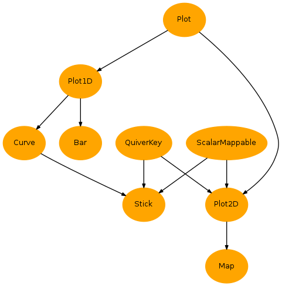
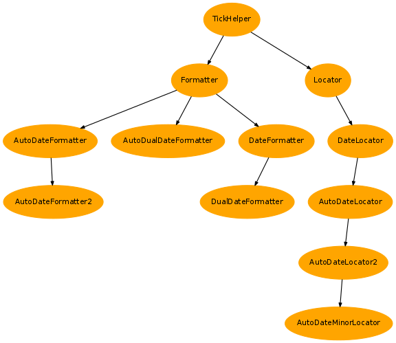

2.3.15.2. Content¶
| Inheritance diagrams: | |
|---|---|
- Plots:
- 
- Ticks:
- 
Classes for all plots
-
exception
PlotError[source]¶ Bases:
exceptions.Exception
-
class
Plot(data, load_data=True, pre_plot=True, plot=False, post_plot=False, **kwargs)[source]¶ Bases:
objectBase class for all plots
Generic params: - load_data, optional: Load data.
- pre_plot, optional: Initialize the plot (preprocessing).
- plot, optional: Plot data.
- post_plot, optional: Finalize plot.
- Data loading: See
load_data(),_set_axes_(),_check_order_(). - Plot initialisation: see
pre_plot(). - Plot: see
plot() - Plot finalization: see
post_plot()
Attribute params: - long_name, optional: Force the
long_nameattribute used intitle. See also paramx/ylong_name. - x/ylong_name, optional: Same as
long_namebut for X and Y axes (xlong_nameorylong_name). It refers only to axes for 2D plots, and potentially to data for 1D plots. - units, optional: Force the
unitsattribute used in labels (label,xlabelorylabel). - latex_units, optional: Interpret units with latex after defining
the
latex_unitsattribute. Alternatively, you can simply specify units enclosed with"$". - x/yunits, optional: Same as
unitsbut for X and Y axes (xunitsoryunits). It refers only to axes for 2D plots, and potentially to data for 1D plots. See also paramx/yunits. - x/ymin/max, optional: Force min and max along X and Y by setting
attributes
xmin,xmax,yminorymax. - vmin/max, optional: Force min and max value for data by setting
attributes
vmin,vmax. This may be equivalent to to set X or Y extrema for 1D plots. - x/ylabel, optional: Force label used for X and Y axes
by setting attributes
xlabelorylabel. - title, optional: Force the title of the plot by setting
title - x/ymasked, optional: Force the plot to fit all data
positions along X and/or Y,
even if data is missing, by setting attributes
xmasked,ymaskedorxymasked. - anim, optional: Create an animation for the current figure.
Example:
>>> myplot = Plot(data, xmin=3.5, title='My plot') >>> print myplot.xmin, myplot.title 3.5 Myplot
The followwing rules apply:
titledefaults tolong_name, which defaults to thelong_nameattribute of input data. You can use templates with all other attributes as replacement keys (example"%(long_name)s (max=%(vmax)g)") butxlabeland :attr`ylabel`.unitsdefaults to theunitsattribute of input data.xlong_namedefaults tolong_nameif X axis refers to data, otherwize to thelong_nameattribute of input second axis.ylong_namedefaults tolong_nameif Y axis refers to data, otherwize to thelong_nameattribute of input first axis.xunitsdefaults tounitsif X axis refers to data, otherwize to theunitsattribute of input second axis.yunitsdefaults tounitsif Y axis refers to data, otherwize to theunitsattribute of input first axis.xlabelis empty if X axis refers to a spatial or temporal axis, else it defaults"%(xlong_name)s [%(xunits)s]". You can use templates with all other attributes as replacement keys (example"%(long_name)s (max=%(vmax)g)") buttitleand :attr`ylabel`.ylabelis empty if Y axis refers to a spatial or temporal axis, else it defaults"%(ylong_name)s [%(yunits)s]". You can use templates with all other attributes as replacement keys (example"%(long_name)s (max=%(vmax)g)") buttitleand :attr`xlabel`.vmin/vmaxdefaults to the min/max of all plotted data.xmin/xmaxdefaults tovmin/vminif X axis refers to data, else to the min/max of the second axis of input data.ymin/ymaxdefaults tovmin/vminif Y axis refers to data, else to the min/max of the first axis of input data.uvlatanduvscalerare used to convert vectors (like speed) used by quiver plots.
Warning
These attributes may be used for the plotting process but may not be equal to their graphical counterpart. For instance,
xminmay not be equal tomatplotlib.pyplot.xlim()[0].Generic tasks: - Call to
load_attributes(). - Call to
load_data()ifload_data is True. - Call to
pre_plot()ifpre_plot is True. - Call to
register(). - Call to
load_attributes()for remaining attributes. - Call to
plot()ifplot is True. - Call to
post_plot()ifplot is True and post_plot is True.
-
add_annotation(x, y, xtext, ytext, text='', xycoords='data', textcoords='offset points', arrowprops='->', shadow=False, glow=False, xyscaler=None, strip=True, **kwargs)[source]¶ Add an annotation to the plot axes using
matplotlib.pyplot.annotate()Params: - x,y: Coordinates of the text.
- text: Text to plot.
- xycoords/transform, optional: Type of coordinates of point
(like
"axes"or"data"). - textcoords, optional: Type of coordinates of text
(like
"axes"or"data"). - arrowprops, optional: Dictionary of arrow properties or string thet defines the arrow style.
- shadow, optional: Add a droped shadow below the text
(see
add_shadow()). - shadow_<param>, optional:
<param>is passed toadd_shadow(). - glow, optional: Add a glow effect the text
(see
add_glow()). - glow_<param>, optional:
<param>is passed toadd_glow(). - Other keywords are passed to
matplotlib.pyplot.annotate().
-
add_arrow(x, y, udata, vdata, zorder=150, polar=False, degrees=True, shadow=False, glow=False, quiverkey=False, xyscaler=None, color=False, **kwargs)[source]¶ Add an arrow to the map using
matplotlib.pyplot.quiver()Params: - x,y: Coordinates of the position of the tail
- udata: X or radial component of arrows.
- vdata: Y or directional component of arrows.
- polar, optional: Consider polar coordinates:
(u, v) -> (rho, theta) - degrees, optional: If True (default), trat
thetaas degrees, else radians. - quiver_<param>, optional:
<param>is passed tomatplotlib.pyplot.quiver(). - Other keywords are passed to
matplotlib.pyplot.plot().
See also:
-
add_axobj(gtype, obj, single=False, axis=None)[source]¶ Add a object to the bank of current
matplotlib.axes.AxesinstanceReturn: The object added.
Example: >>> text_object = myplot.add_axobj('vmin', 24.5)
See also:
-
add_bottom_label(text, **kwargs)[source]¶ Add a text label to the bottom of the plot
See also: add_bottom_label()
-
add_box(box, zorder=150, shadow=False, glow=False, color='r', npts=10, xyscaler=None, fill=False, **kwargs)[source]¶ Add a box to the plot using
matplotlib.pyplots.plot()Params: - box: Box limits in the forms
[xmin,ymin,xmax,ymax]dict(x=(xmin,xmax),y=(xmin,xmax). - color, optional: Line color of the box.
- npts, optional: Number of points per side (useful with special map projections).
- shadow, optional: Add a droped shadow below the box
(see
add_shadow()). - shadow_<param>, optional:
<param>is passed toadd_shadow(). - glow, optional: Add a glow effect the box
(see
add_glow()). - glow_<param>, optional:
<param>is passed toadd_glow(). - Other keywords are passed to
matplotlib.pyplot.plot().
See also: - box: Box limits in the forms
-
add_figtext(*args, **kwargs)[source]¶ Add text to the current figure using
figtext()Defaults: - Position: defaults to the top center.
- Alignement:
ha="center", va="top"
Example: >>> myplot.figtext('Group of plots') >>> myplot.figtext(0.2, 0.92, 'My plots', color='b', ha='left', va='center')
-
add_glow(objs, gtypes=None, **kwargs)[source]¶ Add glow effect to objects
See: add_glow()
-
add_key(key, **kwargs)[source]¶ Add a key to specify the plot number
See
add_key()for more information.
-
add_lat_label(x, y, mylat, fmt='%5g', **kwargs)[source]¶ Add a longitude label
See
add_text()for other keywords
-
add_left_label(text, **kwargs)[source]¶ Add a text label to the left of the plot
See also: add_left_label()
-
add_line(extents, zorder=150, shadow=False, glow=False, color='r', npts=10, xyscaler=None, **kwargs)[source]¶ Add a line to the plot using
matplotlib.pyplots.plot()Params: - extents: Extents in the forms
[xmin,ymin,xmax,ymax]dict(x=(xmin,xmax),y=xmin,xmax). - color, optional: Line color of the line.
- npts, optional: Number of points per side (useful with special map projections).
- shadow, optional: Add a droped shadow below the box
(see
add_shadow()). - shadow_<param>, optional:
<param>is passed toadd_shadow(). - glow, optional: Add a glow effect the box
(see
add_glow()). - glow_<param>, optional:
<param>is passed toadd_glow(). - Other keywords are passed to
matplotlib.pyplot.plot().
See also: - extents: Extents in the forms
-
add_lines(xx, yy, zorder=150, shadow=False, glow=False, color='r', xyscaler=None, closed=False, **kwargs)[source]¶ Add lines to the plot using
matplotlib.axes.Axes.plot()Params: - xx/yy: Coordinates (in degrees).
- color, optional: Line color of the line.
- closed, optional: Close the lines to form a polygon.
- shadow, optional: Add a droped shadow below the box
(see
add_shadow()). - shadow_<param>, optional:
<param>is passed toadd_shadow(). - glow, optional: Add a glow effect the box
(see
add_glow()). - glow_<param>, optional:
<param>is passed toadd_glow(). - Other keywords are passed to
matplotlib.pyplot.plot().
See also:
-
add_lon_label(x, y, mylon, fmt='%5g', **kwargs)[source]¶ Add a longitude label
See
add_text()for other keywords
-
add_obj(gtype, obj, single=False)[source]¶ Add a graphic object to the bank of current instance
Params: - gtype: A list (or a single element) of string keys to name the object.
- obj: The object it self (may be a list).
- single, optional: If
True,objif store as is (i.e is not appended to existing store objects having the same name).
Return: The object added.
Example: >>> text_object = myplot.add_obj(['plotted', 'text', myplot.axes.text(10, 20, 'text')) >>> text_object = myplot.add_obj('colorbar', myplot.colorbar(), single=True)
See also:
-
add_param_label(text, **kwargs)[source]¶ Add parameters description to the bottom/left of the figure using
add_param_label()Example: >>> c = curve2(sst, show=False) >>> c.add_param_label(dict(max=.23, kz=0.25), color='r')
Params: - text: Either a string or a dictionary.
- See
add_param_label()for other parameters
-
add_place(x, y, text, zorder=150, color='k', shadow=False, glow=False, text_offset=(0, 10), ha='center', va='center', **kwargs)[source]¶ Place a point using
add_point()and a label usingadd_text()Examples: >>> m = map2(sst, show=False) >>> m.add_place(-5, 44, 'Buoy 654', text_offset=(20,0), text_ha='left', text_color='b', point_size=100, shadow=True)
Params: - x/y: Coordinates of the place in data units.
- text: Name of the place.
- text_offset, optional: Offset of the text in points with relative to coordinates.
- point_<param>, optional:
<param>is passed toadd_point(). - text_<param>, optional:
<param>is passed toadd_text().
-
add_point(x, y, zorder=150, shadow=False, glow=False, color='r', size=20, xyscaler=None, **kwargs)[source]¶ Add a point to the map using
matplotlib.pyplots.plot()Params: - x,y: Coordinates.
- color, optional: Line color of the point.
- shadow, optional: Add a droped shadow below the box
(see
add_shadow()). - shadow_<param>, optional:
<param>is passed toadd_shadow(). - glow, optional: Add a glow effect the box
(see
add_glow()). - glow_<param>, optional:
<param>is passed toadd_glow(). - Other keywords are passed to
matplotlib.pyplot.plot().
See also:
-
add_right_label(text, **kwargs)[source]¶ Add a text label to the right of the plot
See also: add_right_label()
-
add_shadow(objs, gtypes=None, **kwargs)[source]¶ Add shadow to objects
See: add_shadow()
-
add_text(x, y, text, transform='axes', shadow=False, glow=False, xyscaler=None, strip=True, **kwargs)[source]¶ Add text to the plot axes
Params: - x,y: Coordinates of the text.
- text: Text to plot.
- transform, optional: Type of coordinates
(like
"axes"or"data"). - shadow, optional: Add a droped shadow below the text
(see
add_shadow()). - shadow_<param>, optional:
<param>is passed toadd_shadow(). - glow, optional: Add a glow effect the text
(see
add_glow()). - glow_<param>, optional:
<param>is passed toadd_glow(). - Other keywords are passed to
matplotlib.pyplot.text().
-
add_time_label(x, y, mytime, fmt='%Y/%m/%d %H:%M', **kwargs)[source]¶ Add a time label
See
add_text()for other keywords
-
add_top_label(text, **kwargs)[source]¶ Add a text label to the top of the plot
See also: add_top_label()
-
add_water_mark(text, x=0.5, y=0.5, ha='center', va='center', size=20, color='k', alpha=0.7, zorder=0, transform='axes', **kwargs)[source]¶ Add a background text to the plot
All arguments are passed to
add_text().
-
anim¶ Is each plot saved for final animation?
-
animator¶ Current
Animatorinstance or None
-
cla()[source]¶ Clear axes of everything
See
clear()andmatplotlib.pyplot.cla()
-
clf()[source]¶ Clear figure of everything
See
clear(),cla()andmatplotlib.pyplot.clf()
-
del_quiverkey_units()[source]¶ Del
quiverkey_units
-
del_xlong_name()[source]¶ Del
xlong_name
-
del_ylong_name()[source]¶ Del
ylong_name
-
dict(*keys, **items)[source]¶ Get attributes as a dictionary
Note
unitsis treated in a special way. Iflatex_unitsisTrue, it is formatted as$<units>$.
-
figtext(*args, **kwargs)¶ Add text to the current figure using
figtext()Defaults: - Position: defaults to the top center.
- Alignement:
ha="center", va="top"
Example: >>> myplot.figtext('Group of plots') >>> myplot.figtext(0.2, 0.92, 'My plots', color='b', ha='left', va='center')
-
format_axes(tz=None, nodate=False, date_rotation=None, date_fmt=None, date_locator=None, date_minor_locator=None, date_nominor=False, log=False, **kwargs)[source]¶ Scale and format X and Y axes
Params: - x/y/vskip, optional: Skip axis formating.
- nodate, optional: do not format as date.
- date_rotation, optional: Rotate date labels.
- date_fmt, optional: Date format (like
"%s/%m/%Y"). - date_locator, optional: Major locator (see
setup_time_axis()). - date_minor_locator, optional: Minor locator (see
setup_time_axis()). - date_nominor, optional: Do not plot minor localor.
- x/y/vmin/max, optional: Force min/max of X or Y axis (defaults to
xmin, etc). - x/y/vlim, optional: Force min/max of X or Y axis with (min,max)` like argument.
- x/y/vminmax, optional: Minimal max value -> use this value if max is too low.
- x/y/vmaxmin, optional: Maximal min value.
- x/yticks, optional: Position of ticks.
- x/yfmt (or …format, …tickfmt, …tickformat, optional: Format of ticks.
- x/yticklabels, optional: Label of ticks.
- x/yhide, optional: Hide labels.
- x/ynmax (or …nmax_ticks*), optional: Max number of ticks for some locators.
- x/y/vtitle (or ..label), optional: Title of the axis (defaults to
xlabel, etc).
-
get_axobj(gtype=None, axis=None, axes=None)[source]¶ Get an object stored in the bank of current
matplotlib.axes.AxesinstanceParams: gtype, optional: Object type (name). If not set, all objects are returned.
axis, optional: If one of
"x"or"y", get objects stored in current xaxis or yaxis instead if current axes instance.axes, optional: Target axes, which defaults to
- attribute
axes, - result from
matplotlib.pyplot.gca().
- attribute
Example: >>> myplot.get_axobj() >>> myplot.get_axobj('vmin') >>> myplot.get_axobj('hlitvs', axis='x')
>>> Plot.get_axobj()
Return: The object or
Noneif not found.See also:
-
get_brothers(notme=False, mefirst=True, filter=False)[source]¶ Return all
Plotinstances that belongs to current axesParams: - notme, optional: Do not include current object in the list.
- mefirst, optional: Place me at the beginning of the list.
- filter, optional: If callable, use it to filter out brothers.
-
classmethod
get_current(axes=None)[source]¶ Retreive an instance of this class if found to be plotted in currents axes
Params: - axes, optional: Check this axes instance instead of the current one.
Return: Last plotted instance, else
NoneExample: >>> m = Map.get_current()
-
get_data(scalar=False)[source]¶ Get data as a tuple of
MaskedArraySee also: get_xdata()get_ydata()uvscaler
-
get_fmt_lnu(prefix='', fmtln='%(long_name)s', fmtu='%(units)s', fmtlnu='%(long_name)s [%(units)s]', long_name=True, units=True)[source]¶ Format long_name and units as string according to their availability
Params: - prefix, optional: Prefix of the attributes
Example: >>> myplot.get_fmt_lnu() '%(long_name)s [%(units)s]' >>> myplot.get_fmt_lnu(prefix='x', fmtlnu='%(long_name)s [%(units)s]') '%(xlong_name)s [%(xunits)s]' >>> myplot.get_fmt_lnu(long_name=False) '%(xunits)s'
-
get_latex_units()[source]¶ Get
latex_units
-
get_metric_scale(xy, lat=None)[source]¶ Get units of X or Y plot axis as meters if possible
Longitude and latitude coordinates are converted using
deg2m(). elsetometric()is used using axis units.Params: - xy: Plot axis type (
"x","y"…). - lat, optional: Latitude for degrees to meter conversion
of longitude coordinates. It default to
uvlat.
Return: Noneif conversion of possible, else a float value.
- xy: Plot axis type (
-
get_obj(gtype)[source]¶ Get a graphic object stored in the bank
Example: >>> myplot.get_obj('pcolor')[0].set_zorder(15) >>> myplot.get_obj('key').set_color('red')
Return: The object or
Noneif not found.See also:
-
get_quiverkey_units()[source]¶ Get
quiverkey_units
-
get_transoffset(x, y, units='points', transform='data')[source]¶ Return a translation
TransformIt can be used for instance to plot an object with an offset with respect to its specified position.
Params: - x/y: Relative position.
- units, optional: Units (“points”, “inches”, “pixels”, …)
- transform, optional: Base transform for reference position. Choose for instance “data” or “axes”.
Example: >>> o = Plot2D(data) >>> o.add_point(-4, 43) >>> t = o.get_transoffset(0, 10) >>> o.text(-4, 43, transform=t)
See also: offset_copy()
-
get_uvlat(default=45.0)[source]¶ Get
uvlatIf a latitude axis is available on X or Y plot axis, its mean value is used, else it defaults to
default
-
get_uvscaler(guess=True, lat=None, raw=False)[source]¶ Get
uvscalerParams: - guess, optional: Guess scaler from axis types and data units if not specified.
- lat, optional: Latitude value passed to
get_metric_scale()to guess plot axis metric scale.
-
get_xdata(scalar=True, masked=False, bounds=False)[source]¶ Get the numerical data associated with the X axis
Note
It can come from a physical axis or data depending on the axis type
xtype.Params: - scalar, optional: Set it to
Trueto get data as a scalar array in case X axis refers to a tuple of data. If set to an int, it takes the element #scalar of this tuple. - masked, optional: If it is an axis (not data), values are masked with data mask.
- bounds, optional: The data bounds (valid only of X is an axis).
See also: - scalar, optional: Set it to
-
get_xlong_name()[source]¶ Get
xlong_name
-
get_xy(x, y, transform=None, xyscaler=None, default_transform=None, atleast_1d=False)[source]¶ Convert (x,y) in data coordinates
Params: - x/y: Coordinates referenced to data, axes or figure.
- transform, optional: Transform applied to coordinates.
This either a
matplotlib.transforms.Transformor a string:"data","axes","figure". - xyscaler, optional: Converter of coordinates used when input
coordinates are in data coordinates. It must be a callable,
and it defaults to attribute
xyscalerif existing. It converts for instance from degrees to meters forMapinstances. If equal to False, no conversion is performed.
-
get_ydata(scalar=True, masked=False, bounds=False)[source]¶ Get the numerical data associated with the Y axis
Note
It can come from a physical axis or data depending on the axis type
ytype.Params: - scalar, optional: Set it to
Trueto get data as a scalar array in case Y axis refers to a tuple of data. If set to an int, it takes the element #scalar of this tuple. - masked, optional: If it is an axis (not data), values are masked with data mask.
- bounds, optional: The data bounds (valid only of Y is an axis).
See also: - scalar, optional: Set it to
-
get_ylong_name()[source]¶ Get
ylong_name
-
grid(b=True, **kwargs)[source]¶ Add a grid to axes using
grid()Example: >>> myplot.grid(color='r') >>> myplot.grid(False)
-
hlitvs(**kwargs)[source]¶ Highlight intervals with grey/white background alternance
See
hlitvs()for more information.
-
id¶ Current data id
-
isset(key)[source]¶ Check if an attribute has been manually set different from
NoneExample: >>> return myplot.iset('xmin')
See also:
-
label¶ Preformed label to use for the plot. It may be formed as a template using other attributes like
long_name,units,xmin, etc.
-
latex_units¶ Interpret units with latex
-
legend(*args, **kwargs)[source]¶ A simple call to the
matplotlib.axes.Axes.legend()methodArguments and keywords are passed to
legend().Defaults values :
- loc:
"best" - shadow:
False - fancybox:
True - alpha (applied to legend patch):
0.5
- loc:
-
load_attributes(items, select=None)[source]¶ Load (selected) attributes from
itemsAttributes not found are set to
None.Example: >>> items = dict(xmin=4., title='%(long_name)s') >>> myplot.load_attributes('xmin', 'units', units='degC', **items)
-
load_data(data, **kwargs)[source]¶ Load data and format data, and check rank. It finally calls
_check_order_().Params: data: A single
cdms2variable or a tuple of them, in the forms(m,), or(u,v),(m,u,v), where:u: X component of a vector.v: Y component of a vector.m: A scalar variable. Ifuandvare set, it defaults to their modulus.
order, optional: See
_check_order_()transpose, optional: See
_check_order_()Keywords are passed to
_set_axes_()for axis subtitutions.
Attributes: The following attributes are defined:
-
data¶ A 1- to 3-element tuple of
MV2.arrayin a form of similar to data above.
-
x¶ The last axis of the first element of data, or
Noneif X axis refer to data.
-
y¶ The first axis of the first element of data, or
Noneif Y axis refer to data.
-
mask¶ The data mask.
See also: _check_order_():meth`_set_axes_`
-
long_name¶ Current long name
-
masked= True¶
-
post_plot(grid=True, figtext=None, show=True, close=False, savefig=None, savefigs=None, title=None, fullscreen=False, anchor=None, autoresize=2, finalize=None, key=False, hlitvs=False, legend=False, tight_layout=False, param_label=None, **kwargs)[source]¶ Finish plotting stuff (plot size, grid, texts, saves, etc)
Params: - title: Title of the figure [defaults to var.long_name or ‘’]
- grid: Plot the grid [default: True]
- grid_<param>: <param> is passed to
grid() - hlitvs: Add highlithing if time axis [default: False]
- figtext: figtext Add text at a specified position on the figure. Example: figtext=[0,0,’text’] add a ‘text’ at the lower left corner, or simply figtext=’text’.
- figtext_<param>: <param> is passed to
figtext() - anchor: Anchor of the axes (useful when resizing) in [‘C’, ‘SW’, ‘S’, ‘SE’, ‘E’, ‘NE’, ‘N’, ‘NW’, ‘W’].
- legend, optional: Draw the legend using
legend(). - legend_<param>: <param> is passed to
legend() - show: Display the figure [default: True]
- savefig: Save the figure to this file.
- savefig_<param>: <param> is passed to method
savefig()and finally to the matplotlib functionsavefig(). - savefigs: Save the figure into multiple formats using
savefigs()and ‘savefigs’ as the prefix to the files. - savefigs_<param>: <param> is passed to
savefigs() - autoresize: Auto resize the figure according axes (1 or True), axes+margins (2). If 0 or False, not resized [default: False=2].
- key: Add a key (like ‘a)’) to the axes using add_key if different from None [default: None]
- key_<param>: <param> is passed to
add_key() - param_label: Add a param label to the figure using
add_param_label()if different from None [default: None] - param_label_<param>: <param> is passed to
add_param_label() - close: Close the figure at the end [default: False]
- title_<param>: <param> is passed to
title() - logo_<param>: <param> is passed to
add_logo() - tight_layout: To make a tight layout one everything is plotted.
-
pre_plot(axes=None, figure=None, figsize=None, subplot=None, twin=None, subplots_adjust=None, bgcolor=None, noframe=False, fullscreen=False, verbose=False, axes_host=False, axes_xoffset=0, elev=None, azim=None, **kwargs)[source]¶ Initialize the plot
Tasks: Params: - fig, optional: Figure number.
- figsize, optional: Initialize the figure with this size.
- axes, optional: Use this axes object.
- subplot, optional: Call to
subplot()to create axes. - subplots_adjust, optional: Dictionary sent to
subplots_adjust(). You can also use keyparams ‘left’, ‘right’, ‘top’, ‘bottom’, ‘wspace’, ‘hspace’! - top/bottom/left/right/wspace/hspace, optional: Override
subplots_adjust. - sa, optional: Alias for subplots_adjust.
- twin, optional: Use
"x"or"y"or"xy"to make a copy of current X or Y axes (seematplotlib.pyplot.twinx()). You can also provide a dictionary :twin=dict(x=axes1, y=axes2). - bgcolor, optional: Background axis color.
- axes_rect, optional: [left, bottom, width, height]
in normalized (0,1) units to create axes using
axes(). - axes_<param>, optional: <param> is passed to
axes(). - noframe, optional: Suppress plot frames.
- fullscreen, optional: Plot in full screen mode (thus,
noframe==True). - verbose, optional: Informs about errors with axes.
Attributes: -
fig¶ Figureon which plots are drawn.
-
ptitle(title=None, force=None, **kwargs)[source]¶ Add a title to the plot
Note
No title is added to the plot if a title already exists and the specified title is guessed (not hard set).
Params: title: Title to add to plot.
- A string: directly used.
TrueorNone: thetitleattribute is used.False: not title is plotted.
force, optional: If the title is already plotted, it is not overwritten, except if
force is True.Other keywords are passed to
matplotlib.pyplot.title().
-
quiverkey(qv, value, pos=(0.0, 1.02), text='%(value)g %(units)s', units=None, latex_units=None, value_mode=80, **kwargs)[source]¶ Add a quiver key to the plot
Params: - qv: Results of
quiver(). - value: Numeric value for key (used by text).
- pos, optional: Position of key for arrow .
- text, optional: Text or format with variables ‘value’ and ‘units’.
- units, optional: Units for key (used by text).
- latex_units, optional: Interpret units using latex.
- Extra keywords are passed to
quiverkey().
- qv: Results of
-
quiverkey_units¶ Units used for quiverkey
-
rank= None¶
-
re_latex_match()¶ match(string[, pos[, endpos]]) –> match object or None. Matches zero or more characters at the beginning of the string
-
register_obj(obj, gtypes=None, anim=None, **kwargs)[source]¶ Register an object with
add_obj()andanimator_append()
-
savefig(figfile, verbose=False, mkdir=True, **kwargs)[source]¶ Save the figure to a file
Params: - figfile: Figure file name. Also accepts
OutputWorkFile. - verbose, optional: Informs about file name when written.
- mkdir, optional: Make figure directory if it does not exists.
- Other keywords are passed to
matplotlib.pyplot.savefig().
- figfile: Figure file name. Also accepts
-
savefigs(figfile, **kwargs)[source]¶ Save a figure to png (and optionaly) pdf files using
savefigs()
-
set_axobj(gtype, obj, axis=None)[source]¶ Shortcut to
add_axobj()called withsingle=True
-
set_quiverkey_units(value)[source]¶ Set
quiverkey_units
-
set_xlong_name(long_name=None)[source]¶ Set
xlong_name
-
set_ylong_name(long_name=None)[source]¶ Set
ylong_name
-
show(**kwargs)[source]¶ Show the current figure
If the backend does not allow showing the figure using
matplotlib.pyplot.show(), it uses an external viewer after saving the figure to a temporary file usingmatplotlib.pyplot.savefig()
-
text(x, y, text, transform='axes', shadow=False, glow=False, xyscaler=None, strip=True, **kwargs)¶ Add text to the plot axes
Params: - x,y: Coordinates of the text.
- text: Text to plot.
- transform, optional: Type of coordinates
(like
"axes"or"data"). - shadow, optional: Add a droped shadow below the text
(see
add_shadow()). - shadow_<param>, optional:
<param>is passed toadd_shadow(). - glow, optional: Add a glow effect the text
(see
add_glow()). - glow_<param>, optional:
<param>is passed toadd_glow(). - Other keywords are passed to
matplotlib.pyplot.text().
-
title¶ Preformed title to use for the plot. It may be formed as a template using other attributes like
long_name,units,xmin, etc.
-
units¶ Current units
-
uvscaler¶ Function to rescale U anv V data along X and Y axes.
Noneis returned if no scaling is possible.Example: >>> uvscaler = myplot.uvscaler >>> if uvscaler is not None: ... u2,v2 = myplot.uvscaler(u, v)
Return: A callable function or
Noneif no scaling is possible
-
vmax¶ Data max to use for plot
-
vmin¶ Data min to use for plot
-
xid¶ Current id of X axis
-
xlabel¶ Label of X axis. It may be formed as a template using other attributes like
long_name,units,xmin, etc.
-
xlong_name¶ Current long_name of X axis
-
xmasked¶ Whether X data are not considered if no data at these coordinates
-
xmax¶ Max of X axis to use for plot
-
xmin¶ Min of X axis to use for plot
-
xticks¶ X ticks to use plot
-
xunits¶ Current units of X axis
-
xymasked¶ Whether X and Y data are not considered if no data at these coordinates
-
yid¶ Current id of Y axis
-
ylabel¶ Label of Y axis. It may be formed as a template using other attributes like
long_name,units,xmin, etc.
-
ylong_name¶ Current long_name of Y axis
-
ymasked¶ Whether X data are not considered if no data at these coordinates
-
ymax¶ Max of Y axis to use for plot
-
ymin¶ Min of Y axis to use for plot
-
yticks¶ X ticks to use for plot
-
yunits¶ Current units of Y axis
-
class
Plot1D(data, load_data=True, pre_plot=True, plot=False, post_plot=False, **kwargs)[source]¶ Bases:
vacumm.misc.core_plot.Plot-
rank= 1¶
-
-
class
Curve(data, load_data=True, pre_plot=True, plot=False, post_plot=False, **kwargs)[source]¶ Bases:
vacumm.misc.core_plot.Plot1DClass for plotting simple curve
Params: data: Data to plot. It may be a single variable or tuple. It a tuple is passed, here are the possible forms:
(M,): Simple scalar.(U,V): Vector coordinates and the modulus is plotted.(M,U,V): Modulus and vector coordinates and only the modulus is used and plotted.
parg, optional: Argument passed to
plot()after the data.Specific plot params: See
plot().Other generic params: See
Plot.
Example: >>> c = Curve(mydata, xmin=3, plot=False) >>> c.ymax = 5. >>> c.plot('-r') >>> c.post_plot(savefig='toto.png')
-
plot(parg=None, nosingle=False, label=None, err=None, fill_between=False, shadow=False, glow=False, log=False, **kwargs)[source]¶ Plot of data as a curve
Params: - parg, optional: Argument passed to
plot()after the data. - nosingle, optional: Single point with missing data around are not plotted.
- fill_between, optional: Plot curve using
fill_between(). Reference value defaults to 0. and may be given provided by the parameter. - fill_between_<param>, optional:
<param>is passed tofill_between(). - err, optional: Errors as
(2,nx)array to add to the plot usingerrorbar(). - err_<param>, optional:
<param>is passed toerrorbar(). - label, optional: Alternative label for the plot
(see also
label). - shadow, optional: A shadow is plotted below the line and points.
- shadow_<param>, optional:
<param>is passed toadd_shadow(). - glow, optional: A glow effect is plotted below the line and points.
- glow_<param>, optional:
<param>is passed toadd_glow().
- parg, optional: Argument passed to
-
class
Bar(data, load_data=True, pre_plot=True, plot=False, post_plot=False, **kwargs)[source]¶ Bases:
vacumm.misc.core_plot.Plot1DClass for plotting simple curve
Params: Example: >>> c = Bar(mydata, xwidth=.8, plot=False, order='zd') >>> c.ymax = 5. >>> c.plot() >>> c.post_plot(savefig='rain.png')
-
plot(width=1.0, lag=0, align='center', shadow=False, glow=False, offset=None, label=None, **kwargs)[source]¶ Plot data as bar plot
Params: - width, optional: Relative width of the bars(
0<width<1). a width of1means that successive are bars are joined. - lag, optional: Relative lag to apply to the position
- align, optional: Alignment relative to coordinates.
- shadow, optional: Add a shadow to the bars.
- shadow_<param>, optional:
<param>is passed toadd_shadow(). - glow, optional: Add a glow effect to the bars.
- glow_<param>, optional:
<param>is passed toadd_shadow(). - offset, optional: Bars start at
offset. - label, optional: Alternative label for the plot
(see also
label). - bar_<param>, optional:
paramis passed tomatplotlib.pyplot.bar()(ormatplotlib.pyplot.barh()).
Example: >>> Bar(rain1).plot(width=.45, align='left', color='cyan') >>> Bar(rain2).plot(width=.45, lag=.5, align='left', color='b')
- width, optional: Relative width of the bars(
-
-
class
Stick(udata, vdata, polar=False, degrees=True, **kwargs)[source]¶ Bases:
vacumm.misc.core_plot.QuiverKey,vacumm.misc.core_plot.ScalarMappable,vacumm.misc.core_plot.CurveClass for makeing a stick plot (vectors on a line)
Params: - udata: 1D array of intensities along X.
- vdata: 1D array of intensities along V.
- Specific data loading params: See
load_data(). - Specific plot params: See
plot(). - Specific plot finalization params: See
post_plot(). - Generic params: See
Plot.
Example: >>> c = Stick(u10, v10, savefig='cart.png') >>> c = Stick(r, theta, polar=True,width=.8, plot=False, order='zd') >>> c.plot() >>> c.post_plot(savefig='polar.png')
-
format_axes(**kwargs)[source]¶ Scale and format X and Y axes
Params: - x/y/vskip, optional: Skip axis formating.
- nodate, optional: do not format as date.
- date_rotation, optional: Rotate date labels.
- date_fmt, optional: Date format (like
"%s/%m/%Y"). - date_locator, optional: Major locator (see
setup_time_axis()). - date_minor_locator, optional: Minor locator (see
setup_time_axis()). - date_nominor, optional: Do not plot minor localor.
- x/y/vmin/max, optional: Force min/max of X or Y axis (defaults to
xmin, etc). - x/y/vlim, optional: Force min/max of X or Y axis with (min,max)` like argument.
- x/y/vminmax, optional: Minimal max value -> use this value if max is too low.
- x/y/vmaxmin, optional: Maximal min value.
- x/yticks, optional: Position of ticks.
- x/yfmt (or …format, …tickfmt, …tickformat, optional: Format of ticks.
- x/yticklabels, optional: Label of ticks.
- x/yhide, optional: Hide labels.
- x/ynmax (or …nmax_ticks*), optional: Max number of ticks for some locators.
- x/y/vtitle (or ..label), optional: Title of the axis (defaults to
xlabel, etc).
-
get_xdata(scalar=1, masked=False, bounds=False)[source]¶ Get the numerical data associated with the X axis
Note
It can come from a physical axis or data depending on the axis type
xtype.Params: - scalar, optional: Set it to
Trueto get data as a scalar array in case X axis refers to a tuple of data. If set to an int, it takes the element #scalar of this tuple. - masked, optional: If it is an axis (not data), values are masked with data mask.
- bounds, optional: The data bounds (valid only of X is an axis).
See also: get_ydata()get_data()- scalar, optional: Set it to
-
get_ydata(scalar=2, masked=False, bounds=False)[source]¶ Get the numerical data associated with the Y axis
Note
It can come from a physical axis or data depending on the axis type
ytype.Params: - scalar, optional: Set it to
Trueto get data as a scalar array in case Y axis refers to a tuple of data. If set to an int, it takes the element #scalar of this tuple. - masked, optional: If it is an axis (not data), values are masked with data mask.
- bounds, optional: The data bounds (valid only of Y is an axis).
See also: get_xdata()get_data()- scalar, optional: Set it to
-
load_data(data, **kwargs)[source]¶ Load variables
Special params: - udata: X or radial component of arrows.
- vdata: Y or directional component of arrows.
- polar, optional: Consider polar coordinates:
(u, v) -> (rho, theta) - degrees, optional: If True (default), trat
thetaas degrees, else radians.
Tasks: - Calls
Plot.load_data(). - Deals with polar case, if keyword
polar==True.
-
plot(mod=False, pos=None, line=False, color='k', alpha=1, quiverkey=True, headwidth=None, headlength=None, headaxislength=None, width=None, scale=None, minshaft=None, minlength=None, shadow=False, glow=False, cmap=None, levels=None, label=None, anomaly=False, **kwargs)[source]¶ Main plot
Params: pos, optional: Position of the arrow tails. It defaults to the middle of the appropriate axis.
mod, optional: Plot the curve of the modulus.
mod_<param>*, optional:
<param>is passed toCurve.plot()when plotting the modulus.color: Can be either
"mod": The color is function of the modulus.- A normal color argument for
quiver()(single or list/array).
line, optional: Add a transversal line along the arrow tails.
alpha, optional: Opacity.
scale, optional: Scale of arrows (see
quiver()).headwidth, optional: Head width of arrows (see
quiver()).headlength, optional: Head length of arrows (see
quiver()).headaxislength, optional: Length of arrow head on axis (see
quiver()).minlength, optional: See
quiver().minshaft, optional: See
quiver().quiverkey, optional: Add key to scale arrows.
quiverkey_<param>, optional:
<param>is passed toquiverkey().shadow, optional: Add a drop shadow.
shadow_<param>, optional:
<param>is passed toadd_shadow()glow, optional: Add a drop glow effect.
glow_<param>, optional:
<param>is passed toadd_glow()cmap, optional: Colormap to use when
color="mod".cmap_<param>, optional: Passed to meth:~vacumm.misc.core_plot.ScalarMappable.get_cmap to tune colormap.
levels, optional: Levels of values to use when
color="mod".levels_<param>, optional: Passed to meth:~vacumm.misc.core_plot.ScalarMappable.get_levels to tune levels.
-
class
Plot2D(data, load_data=True, pre_plot=True, plot=False, post_plot=False, **kwargs)[source]¶ Bases:
vacumm.misc.core_plot.ScalarMappable,vacumm.misc.core_plot.QuiverKey,vacumm.misc.core_plot.Plot-
add_grid(**kwargs)[source]¶ Add the coordinates as a grid with centers and corners
See
add_grid()for parameters.
-
fill¶ Fill method for 2D plots: ‘pcolor’, None, True, False, ‘contourf’, ‘imshow’, ‘pcolormesh’
-
load_data(data, **kwargs)[source]¶ Load data and axes
Tasks: - Call to
Plot.load_data(). - Compute
x2d,y2d,x2db,y2db
Params: - data: A single or a tuple or 2D
MV2arrays.- Single variable: Plot 2D scalar field with contours, filled contours, pcolor or image.
- 2-tuple
(U,V): Plot arrows. - 3-tuple
(M,U,V): Plot both scalar fieldMand arrows.
Specific attributes: -
x2d¶ 2D version of the X axis data.
-
y2d¶ 2D version of the Y axis data.
-
x2db¶ 2D bounds coordinates of the X axis data.
-
y2db¶ 2D bounds coordinates of the Y axis data.
- Call to
-
plot(levels=None, contour=True, anomaly=False, streamplot=False, **kwargs)[source]¶ Plot filled and/or contoured content
Params: - levels, optional: Levels for contouring and/or colormap.
- levels_<param>, optional: Passed to
get_levels()to tune levels. - contour, optional: Plot line contours.
- streamplot, optional: Plot stream lines instead of arrows.
- Other arguments are passed to
plot_fill()andplot_contour().
Tasks: - Get
levels. - Calls
plot_fill(). - Calls
plot_contour(). - Calls
plot_quiver()orplot_streamplot().
-
plot_contour(zorder=None, alpha=1, clabel=None, linewidths=None, colors='k', shadow=False, glow=False, **kwargs)[source]¶ Plot contour lines
Params: - contour_<param>, optional:
<param>is passed tocontour(). - zorder, optional: Plot order.
- alpha, optional: Opacity.
- linewidths, optional: Contour linewidths.
- clabel, optional: Add contour labels with
clabel(). If not specified, it is taken from config section[vacumm.misc.plot]and config optionclabel. - clabel_<param>, optional:
<param>is passed toclabel().. - contour_<param>, optional:
<param>is passed tocontour().
Tasks: - Get the scalar data with
get_data(). - Calls
contour(). - Calls
clabel()
- contour_<param>, optional:
-
plot_fill(norm=None, shading='flat', alpha=1, extend=None, zorder=None, shadow=False, glow=False, **kwargs)[source]¶ Plot filled stuff
Params: fill, optional: Type filling. It defaults to
filloption of the[vacumm.misc.plot]section of the configuration (seeedit_config()).0or"no"or"nofill"orFalse: No filling.1or"pcolor"or"pcolormesh": Fill usingpcolor()orpcolormesh().2or"imshow": Fill usingimshow().3or"contourf": Fill usingcontourf().
fill_<param>:
<param>is passed to the corresponding plot function.nofill, optional: Implies
fill=0.cmap, optional: Colormap (defaults to
"magic").cmap_<param>, optional: Passed to
get_cmap()to tune colormap.norm, optional:
Normalizeinstance.alpha, optional: Opacity.
shading, optional: Shading with
pcolor().extend, optional: Let’s
contourf()add contours to cover all data range.zorder, optional: Plot order.
Tasks: - Guess the fill method.
- Get the colormap with
get_cmap(). - Get the scalar data with
get_data(). - Calls
imshow()orpcolor()orpcolormesh()orcontourf(). - Calls
clabel()
Note
get_levels()must have been previously called.
-
plot_quiver(zorder=None, quiverkey=True, barbs=False, shadow=False, glow=False, quiver_cmap=None, quiver_vmin=None, quiver_vmax=None, quiver_samp=None, quiver_xsamp=None, quiver_ysamp=None, quiver_res=None, quiver_relres=None, quiver_xres=None, quiver_xrelres=None, quiver_yres=None, quiver_yrelres=None, quiver_res_scaler=None, quiver_nauto=None, **kwargs)[source]¶ Plot arrows
You can undersample arrows using direct undersampling (parameters with “samp”) or undersampling based on resolution (using
resol_mask()). Resolution undersampling may be in input (like degrees) or transformed (like meters) coordinates. Transformed coordinates are deduced from input coordinates usingquiver_res_scaler, which defaults toxyscaler.Note
Direct unsampling is incompatible with resolution undersampling: the former prevails against the latter.
Params: quiver_norm,optional: Normalize/colorize arrows
0orNone: No normalization, no colorization (default)1: Normalization, no colorization.2: Normalization, colorization.3: No normalization, colorization.
quiver_<param>, optional:
<param>is passed toquiver().barbs, optional: Plot wind barbs instead of arrows (see
barbs()).zorder, optional: Plot order.
alpha, optional: Opacity.
shadow, optional: Add shadow below arrows.
glow, optional: Add glow effect to arrows.
quiverkey, optional: Add key to scale arrows.
quiverkey_<param>, optional:
<param>is passed toquiverkey().cmap, optional: Colormap to use when
color="mod"(defaults to"magic").quiver_samp, optional: Horizontal sampling of arrows (in both directions) [default: 1]
quiver_x/ysamp, optional: Sampling along X/Y [default: quiver_samp]
quiver_res, optional: Horizontal resolution of arrows (in both directions) for undersampling [default: None]
If
'auto', resolution is computed so as to have at maxquiver_nautoarrow in along an axis. If it is acomplextype, its imaginary part set thequiver_nautoparameter andquiver_resis set to'auto'.quiver_x/yres, optional: Same along X/Y [default: quiver_res]
quiver_relres, optional: Relative resolution (in both directions).
- If > 0, =
mean(res)*relres. - If < -1, =
min(res)*abs(relres). - If < 0 and > -1, =
max(res)*abs(relres)
- If > 0, =
quiver_x/yrelres, optional: Same along X/Y [default: quiver_relres]
Tasks: - Get the scalar data with
get_data(). - Calls
quiver(). - Calls
quiverkey()
-
plot_streamplot(zorder=None, shadow=False, glow=False, streamplot_color=None, streamplot_linewidth=None, streamplot_lwmodmin=0.5, streamplot_lwmodmax=3, streamplot_cmap=None, streamplot_norm=None, streamplot_vmin=None, streamplot_vmax=None, **kwargs)[source]¶ Plot stream lines with
streamplot()Params: streamplot_color,optional:
Noneor “default”: Default colorization."modulus": Colorization as a function of the modulus.- Else, passed directly to
streamplot()
streamplot_linewidth,optional:
Noneor"default": Default linewidth."modulus": Linewidth proportional to the modulus with a maximum linewidth ofstreamplot_lwmod.- Else, passed directly to
streamplot()
streamplot_lwmodmin, optional: Min linewidth used when
streamplot_linewidthis set to"modulus".streamplot_lwmodmax, optional: Max linewidth used when
streamplot_linewidthis set to"modulus".streamplot_<param>, optional:
<param>is passed tostreamplot().zorder, optional: Plot order.
alpha, optional: Opacity.
shadow, optional: Add shadow below arrows.
glow, optional: Add glow effect to arrows.
streamplotkey, optional: Add key to scale arrows.
cmap, optional: Colormap to use when
color="modulus"(defaults to"magic").
Tasks: - Get the scalar data with
get_data(). - Calls
streamplot().
-
rank= 2¶
-
xyscaler¶ Function to rescale X and Y coordinates.
Noneis returned if no scaler is available.A typical scaler is a
mpl_toolkits.basemap.Basemapor ampl_toolkits.pyproj.Projinstance that converts positions from degrees to meters using a geographic projection.This scaler is used by
plot_quiver()for undersampling based on resolution.Example: >>> xyscaler = myplot.xyscaler >>> if xyscaler is not None: ... x,y = myplot.xyscaler(x, y)
Return: A callable function or
Noneif no scaling is possible
-
-
class
Map(data, load_data=True, pre_plot=True, plot=False, post_plot=False, **kwargs)[source]¶ Bases:
vacumm.misc.core_plot.Plot2DThis class is used for plotting a map with or without data
It uses a
mpl_toolkits.basemap.Basemapinstance, stored in attributemap. Some other attributes:lon,lat,map_update.-
map¶ A
Basemapinitialized inpre_plot().
-
add_arcgisimage(service, **kwargs)[source]¶ Add an Arcgis image
Available service aliases (see
ARCGISIMAGE_ALIASES): {}
-
add_compass(pos='lower right', size=40, posref=None, style='simple', transform=None, xpad=None, ypad=None, xrel=0.9, yrel=0.9, getpos=False, shadow=False, zorder=10, **kwargs)[source]¶ Add a compass to the map using
add_compass()See
add_compass()all options.Params: - pos, optional:
(lon,lat)where to draw it. - size, optional: Size in pixels.
- posref, optional:
(lon,lat)of reference position where the north is estimated. - style, optional: Compas style: ‘simple’ or ‘fancy’.
- transform: Coordinates transform for
poswhich defaults to “data”. Use a valid transform, or “data”, “axes” or “figure”. - x/yrel: Default placement position relative to longitude and latitude ranges.
- x/ypad: Padding in dots for placement when given as a string like “upper left”.
- shadow, optional: Add a shadow.
- shadow_<param>, optional:
<param>is passed toadd_shadow(). - Othe keywords are passed to
add_compass().
Example: >>> map2(data, compass=True) >>> mymap.add_compass((-4,45), 40, facecolor1='r', text_weight='bold') >>> mymap.add_compass(pos="upper right", style="fancy", xpad=100)
- pos, optional:
-
add_lowhighs(size=40, weight='normal', lowtext='L', hightext='H', shadow=False, glow=False, smooth=False, va='center', ha='center', **kwargs)[source]¶ Mark position of mins and maxs using letters.
It is typically used for adding L and H to depressions and anticyclones.
-
add_mapscale(pos='lower left', scale=None, posref=None, barstyle='simple', transform=None, xrel=0.1, yrel=0.1, getpos=False, posonly=False, shadow=False, zorder=10, **kwargs)[source]¶ Add a map scale using
mpl_toolkits.basemap.Basemap.drawmapscale()Params: - pos, optional:
(lon,lat)where to draw it. - posref, optional:
(lon,lat)of reference position where the scale is estimated. - scale, optional: Length of the scale in projection coordinates (m).
- barstyle, optional: Bar style: ‘simple’ or ‘fancy’.
- transform, optional: Coordinates transform for
poswhich defaults to “data”. Use a valid transform, or “data”, “axes” or “figure”. - x/yrel, optional: Default placement position relative to longitude and latitude ranges.
- x/ypad, optional: Padding if dots for placement when given as a string like “upper left”.
- shadow, optional: Add a shadow.
- shadow_<param>, optional:
<param>is passed toadd_shadow(). - Othe keywords are passed to
drawmapscale().
Example: >>> mymap.add_mapscale((.2,.2), transform='axes') >>> mymap.add_mapscale('upper right', posref=(-2,45), fontsize=10)
- pos, optional:
-
add_mscp(pos=None, posref=None, compass_size=40, transform=None, shadow=False, color='k', zorder=10, **kwargs)[source]¶ Plot a mapscale and a compass above
Params: - pos: Position of the mapscale (see
add_mapscale()). The compass is drawn just above. - posref, optional: Position of reference point for both mapscale and compass.
- mapscale_<param>, optional:
<param>is passed toadd_mapscale(). - scompass_<param>, optional:
<param>is passed toadd_compass().
Example:
>>> map2(data, mscp=True, mscp_pos=(-2, 48)) >>> mymap.add_mscp('lower left') >>> mymap.add_mscp((-4,45), mapscale_scale=100, mapscale_barstyle='fancy', compass_size=50, compass_style='simple') >>> mymap.add_mscp((.9,.1), transform='axes')
- pos: Position of the mapscale (see
-
format_axes(**kwargs)[source]¶ Scale and format X and Y axes
Params: - x/y/vskip, optional: Skip axis formating.
- nodate, optional: do not format as date.
- date_rotation, optional: Rotate date labels.
- date_fmt, optional: Date format (like
"%s/%m/%Y"). - date_locator, optional: Major locator (see
setup_time_axis()). - date_minor_locator, optional: Minor locator (see
setup_time_axis()). - date_nominor, optional: Do not plot minor localor.
- x/y/vmin/max, optional: Force min/max of X or Y axis (defaults to
xmin, etc). - x/y/vlim, optional: Force min/max of X or Y axis with (min,max)` like argument.
- x/y/vminmax, optional: Minimal max value -> use this value if max is too low.
- x/y/vmaxmin, optional: Maximal min value.
- x/yticks, optional: Position of ticks.
- x/yfmt (or …format, …tickfmt, …tickformat, optional: Format of ticks.
- x/yticklabels, optional: Label of ticks.
- x/yhide, optional: Hide labels.
- x/ynmax (or …nmax_ticks*), optional: Max number of ticks for some locators.
- x/y/vtitle (or ..label), optional: Title of the axis (defaults to
xlabel, etc).
-
get_best_loc(onland=True, **kwargs)[source]¶ Best location on the plot for an object according to land/sea mask
-
load_data(data=None, lon=None, lat=None, **kwargs)[source]¶ Data loading
It performs the following tasks:
- Call to the generic
Plot2D.load_data()method. - Set attributes
lonlat.
Params: - data, optional: See
load_data(). - lon, optional: Longitude interval.
- lat, optional: Latitude interval.
-
lon¶ Longitudes as a two-elements tuple or and array.
-
lat¶ Latitudes as a two-elements tuple or and array.
- Call to the generic
-
map= None
-
mapproj(x, y, inverse=False)[source]¶ Convert from degrees to meters (or inverse)
It uses attribute
mapif set to aBasemapinstance with a projection different from “cyl”. If no valid projection is found, et uses functionsdeg2m()andm2deg().Params: - x/y: Coordinates in degrees or meters
- inverse, optional: Reverse projection (meters->degrees)
- current, optional: If True,
-
plot_quiver(quiver_res_scaler=None, quiver_angles='uv', **kwargs)[source]¶ Plot arrows
You can undersample arrows using direct undersampling (parameters with “samp”) or undersampling based on resolution (using
resol_mask()). Resolution undersampling may be in input (like degrees) or transformed (like meters) coordinates. Transformed coordinates are deduced from input coordinates usingquiver_res_scaler, which defaults toxyscaler.Note
Direct unsampling is incompatible with resolution undersampling: the former prevails against the latter.
Params: quiver_norm,optional: Normalize/colorize arrows
0orNone: No normalization, no colorization (default)1: Normalization, no colorization.2: Normalization, colorization.3: No normalization, colorization.
quiver_<param>, optional:
<param>is passed toquiver().barbs, optional: Plot wind barbs instead of arrows (see
barbs()).zorder, optional: Plot order.
alpha, optional: Opacity.
shadow, optional: Add shadow below arrows.
glow, optional: Add glow effect to arrows.
quiverkey, optional: Add key to scale arrows.
quiverkey_<param>, optional:
<param>is passed toquiverkey().cmap, optional: Colormap to use when
color="mod"(defaults to"magic").quiver_samp, optional: Horizontal sampling of arrows (in both directions) [default: 1]
quiver_x/ysamp, optional: Sampling along X/Y [default: quiver_samp]
quiver_res, optional: Horizontal resolution of arrows (in both directions) for undersampling [default: None]
If
'auto', resolution is computed so as to have at maxquiver_nautoarrow in along an axis. If it is acomplextype, its imaginary part set thequiver_nautoparameter andquiver_resis set to'auto'.quiver_x/yres, optional: Same along X/Y [default: quiver_res]
quiver_relres, optional: Relative resolution (in both directions).
- If > 0, =
mean(res)*relres. - If < -1, =
min(res)*abs(relres). - If < 0 and > -1, =
max(res)*abs(relres)
- If > 0, =
quiver_x/yrelres, optional: Same along X/Y [default: quiver_relres]
Tasks: - Get the scalar data with
get_data(). - Calls
quiver(). - Calls
quiverkey()
-
post_plot(drawrivers=False, fillcontinents=True, meridional_labels=True, zonal_labels=True, drawcoastlines=True, drawmapboundary=True, meridians=None, parallels=None, land_color=None, ticklabel_size=None, refine=0, no_seconds=False, fullscreen=False, minutes=True, mapscale=False, compass=False, mscp=False, bfdeg=None, lowhighs=False, arcgisimage=None, **kwargs)[source]¶ Post-processing of the plot
Tasks: Update the map if attribute
map_updateis True:- Treat continents if attribute
map_update= 2 and attributemaphas a coastline resolution notNone: draw coastlines, fill continents and draw rivers. - Draw parallels and associated labels.
- Treat continents if attribute
Call to generic post processing of 2D plots (
Plot2D.post_plot()).
Params: - drawrivers: Draw rivers on the map using method
drawrivers(). - drawrivers_<param>: Pass
<param>to the method. - fillcontinents: Fill continents with color
land_colorusing methodfillcontinents(). - land_color: Fill color.
- fillcontinents_<param>: Pass
<param>to the method. - drawparallels: Display or hide parallels and associated labels using
method
drawparallels(). - drawparallels_<param>: Pass
<param>to the method. - drawparallels_fmt: Default to
MinuteLabel. - drawparallels_gs_<param>: Passed to
geo_scale(). - parallels: Parallels to plot.
- drawmeridians: Display or hide medidians and associated labels using
method
drawmeridians(). - drawmeridians_<param>: Pass
<param>to the method. - drawmeridians_fmt: Default to
MinuteLabel. - drawmeridians_gs_<param>: Passed to
geo_scale(). - meridians: Meridians to plot.
- meridional/zonal_labels: Display or hide meridional/zonal labels.
meridional/zonal_labels=Falseis equivalent toy/xhide=True. - no_seconds: Do not display seconds in labels (if applicable).
- minutes: Do not use decimal degrees for labels (if applicable).
- bfdeg: Degrees are in bold (latex text only, if applicable).
- x/y/ticklabels_<param>: Pass
<param>todrawmeridians()anddrawparallels()to change text properties. - fullscreen: Full screen mode -> no colorbar and no labels.
- mapscale: Add a map scale using
add_mapscale(). - mapscale_<param>: Pass
<param>to theadd_mapscale()method. - compass: Add a compass using
add_compass(). - compass_<param>: Pass
<param>to theadd_compass()method. - mscp: Add a mapscale AND a compass using
add_mscp(). - mscp_<param>: Pass
<param>to theadd_mscp()method.
-
pre_plot(map=None, projection='cyl', resolution='auto', epsg=None, overlay=False, fullscreen=False, map_update=None, lon_min=None, lon_max=None, lat_min=None, lat_max=None, lon_center=None, lat_center=None, lat_ts=None, nocache=False, cache_dir=None, zoom=None, **kwargs)[source]¶ Plot initialisation.
Tasks: Generic params: See
Plot.pre_plot().Special params: - projection: Map projection, like “merc”.
See
Basemapfor a list of possible projections. - resolution: GSHHS resolution of shoreline or ‘s’ for Histolitt (SHOM).
"c": Crude."l": Low."i": Intermediate."h": High."f": Full."s": Histolittfor the french coast (from a shapefile file automatically downloaded once the license is accepted).
- nocache: Management of cached maps.
- map_update: Force the update of the map latter by
post_plot(), settingmap_update. - zoom: Zoom on map bounds before creating it.
-
map_update¶ An attribute to know if current map must be updated by
post_plot(). It is also a parameter to method.
- projection: Map projection, like “merc”.
See
-
uvscaler¶ Function to rescale U anv V data along X and Y axes.
Noneis returned if no scaling is possible.Example: >>> uvscaler = myplot.uvscaler >>> if uvscaler is not None: ... u2,v2 = myplot.uvscaler(u, v)
Return: A callable function or
Noneif no scaling is possible
-
xyscaler¶ Function to rescale X and Y coordinates.
Noneis returned if no scaler is available.A typical scaler is a
mpl_toolkits.basemap.Basemapor ampl_toolkits.pyproj.Projinstance that converts positions from degrees to meters using a geographic projection.This scaler is used by
plot_quiver()for undersampling based on resolution.Example: >>> xyscaler = myplot.xyscaler >>> if xyscaler is not None: ... x,y = myplot.xyscaler(x, y)
Return: A callable function or
Noneif no scaling is possible
-
-
class
Hov(data, load_data=True, pre_plot=True, plot=False, post_plot=False, **kwargs)[source]¶ Bases:
vacumm.misc.core_plot.Plot2D
-
class
QuiverKey[source]¶ -
quiverkey(qv, value=None, value_mode=80, **kwargs)[source]¶ Add a quiver key to the plot
See
Plot.quiverkey()for arguments.Params: - qv: Results of
quiver(). - pos, optional: Position of key for arrow .
- text, optional: Text or format with variables ‘value’ and ‘units’.
- value, optional: Numeric value for key (used by text).
- units, optional: Units for key (used by text).
- latex_units, optional: Interpret units using latex.
- Extra keywords are passed to
quiverkey().
- qv: Results of
-
-
class
ScalarMappable[source]¶ Abstract class for adding scalar mappable utilities
Attribute params: levels, optional: Levels to use for contours or colorbar ticks. “They can be specified as a single value, a list or array, or ” “as a tuple used as argument to
numpy.arange(). It sets the attributelevels.nmax_levels, optional: Maximal number of levels when
levelsare computed automatically. It sets the attributenmax_levels.nmax, optional: Same as nmax_levels. It sets the attribute
keepminmax.cmap, optional: Colormap name (see
vacumm.misc.color.get_cmap()). If not specified, it is taken from config section[vacumm.misc.plot]and config optioncmap, as a string that defaults tomagic.levels_mode, optional: Mode of computing levels if needed. It can be specified at initialisation with attribute
levels_mode. If not specified, it it taken from the config section[vacumm.misc.plot]and config optionlevels_mode."symetric": Min and max are set opposite."positive": Min is set to 0."negative": Max is set to 0."auto": If abs(min) and abs(max) are close,"symetric"is assumed. If min and max are > 0,"positive"is assumed, and the reverse for"negative".
keepminmax, optional: It can be specified at initialisation with attribute
keepminmax. If not specified, it it taken from the config section[vacumm.misc.plot]and config optionkeepminmax. If False or 0, adjustvminandvmaxto first and last values oflevels; if 1, do not changevmin,vmaxandlevelsif 2, adjust first and last values oflevelsorvmin,vmax. It sets the attributecmap.cblabel, optional: Preformed label of the colorbar. It may be formed as a template using other attributes like
long_name,units,xmin, etc. Example:"%(long_name)s [%(units)s]".
-
cblabel¶ Preformed label of the colorbar. It may be formed as a template using other attributes like
long_name,units,xmin, etc.
-
cmap¶ Colomap to use for filled plots and colorbar.
-
colorbar(cax=None, fit=False, ticklabels_nmax=12, **kwargs)[source]¶ Add a colorbar
The colorbar is drawn only if
get_scalar_mappable()returns a valid scalar mappable.Params: - cax, optional: Axes for the colorbar.
- label_<param>, optional: <param> is passed to
set_label(). - ticklabels_<param>, optional: <param> is set as a property of tick labels.
- Other keywords are passed to the
matplotlib.figure.Figure.colorbar()method.
See also:
-
del_keepminmax()[source]¶ Del
keepminmax
-
del_levels_mode()[source]¶ Del
levels_mode
-
del_nmax_levels()[source]¶ Del
nmax_levels
-
get_cmap(cmap=None, nocache=False, tint=None, lum=None, sat=None, pastel=False, **kwargs)[source]¶ Get
cmapParams: - cmap, optional: Colormap name (see
vacumm.misc.color.get_cmap()). It defaults to"magic". - nocache, optional: Once cmap is computed, it is stored
in cache. If
nocache is True, first check cache before trying to compute cmap. - lum, optional: Change luminosity, between -1 and 1.
- sat, optional: Change saturation.
- cmap, optional: Colormap name (see
-
get_keepminmax()[source]¶ Get
keepminmax
-
get_levels(mode=None, keepminmax=None, nocache=False, autoscaling='normal', **kwargs)[source]¶ Get
levelsfor contours and colorbar ticksParams: mode, optional: Mode of computing levels if needed. It can be specified at initialisation with attribute
levels_mode. If not specified, it it taken from the config section[vacumm.misc.plot]and config optionlevels_mode."normal": Min and max are not preprocessed."symetric": Min and max are set opposite."positive": Min is set to 0."negative": Max is set to 0."auto": If abs(min) and abs(max) are close,"symetric"``is assumed. If min and max are > 0, ``"positive"is assumed, and the reverse for"negative".
keepminmax, optional: It can be specified at initialisation with attribute
keepminmax. If not specified, it it taken from the config section[vacumm.misc.plot]and config optionkeepminmax. If False or 0, adjustvminandvmaxto first and last values oflevels; if 1, do not changevmin,vmaxandlevelsif 2, adjust first and last values oflevelsorvmin,vmax.nocache, optional: Once levels are computed, they are stored in cache. If
nocache is True, first check cache before trying to compute levels.autoscaling, optional: Autoscaling mode.
"normal": Useauto_scale()."degrees": Usegeo_scale().- `A callable: Use it to auto scale. It should accept the follwing keywords: vmin, vmax, nmax, keepminmax.
-
get_levels_mode()[source]¶ Get
levels_mode
-
get_nmax_levels()[source]¶ Get
nmax_levels
-
get_scalar_mappable()[source]¶ Get the current scalar mappable or
NoneIt is useful for instance for
colorbar().
-
get_sm()¶ Get the current scalar mappable or
NoneIt is useful for instance for
colorbar().
-
keepminmax¶ Do not adjust
vminandvmaxwhen settinglevels. If 0,vminandvmaxare set to first and lastlevels; if 1, they are not adjested tolevels; if 2, first and lastlevelsare adjusted tovminandvmax.
-
levels¶ Levels to use for contours or colorbar ticks. They can be specified as a single value, a list or array, or as a tuple used as argument to
numpy.arange().
-
levels_mode¶ The way
levelsare estimated fromvminandvmax: ‘positive’/’negative’ means levels starting/ending from 0, ‘anomaly’ or ‘symetric’ means symetric levels, ‘auto’ or ‘smart’ means that mode is estimated from min and max, and ‘normal’ means no special treatment.
-
minmax2levelsmode(vmin=None, vmax=None)[source]¶ Get auto levels mode from min and max value
Return: normal, symetric, positive or negative
-
post_plot(colorbar=True, savefig=None, savefigs=None, show=True, close=False, **kwargs)[source]¶ Params: - colorbar, optional: Plot the colorbar.
- colorbar_<param>, optional:
<param>is passed tocolorbar().
-
set_keepminmax(value)[source]¶ Set
keepminmax
-
set_levels_mode(mode)[source]¶ Set
levels_mode
-
set_nmax_levels(value)[source]¶ Set
nmax_levels
-
vmax¶ Data max to use for plot
-
vmin¶ Data min to use for plot
-
class
AutoDateFormatter2(*args, **kwargs)[source]¶ Bases:
matplotlib.dates.AutoDateFormatter-
scaled= {1.1574074074074073e-05: "%M'%Ss''", 0.0006944444444444445: '%Hh%M', 0.041666666666666664: '%Hh', 1.0: '%d %b', 30.0: '%b %Y', 365.0: '%Y'}¶
-
-
class
AutoDateLocator2(*args, **kwargs)[source]¶ Bases:
matplotlib.dates.AutoDateLocatorA clever
matplotlib.dates.AutoDateLocator
-
class
AutoDateMinorLocator(*args, **kwargs)[source]¶ Bases:
vacumm.misc.core_plot.AutoDateLocator2An extension to the
AutoDateLocator2for minor locators
-
class
AutoDualDateFormatter(locator, **kwargs)[source]¶ Bases:
matplotlib.ticker.FormatterAutomatic formatter that searches for the best
DualDateFormatter
-
class
DualDateFormatter(level, fmt=None, dual_fmt=None, phase=None, locator=None, **kwargs)[source]¶ Bases:
matplotlib.dates.DateFormatterSpecial formatter for dates
Example: [‘00h 01/10/2000’ ‘02h’ …. ‘23h’ ‘00h 01/10/2000’] to mark days and keep hours. Here the ‘phase’ is 0 (00h) and the level is 3 (=’day’).
Todo
DualDateFormatter: verify if dual_fmt is really used
-
class
Section(data, load_data=True, pre_plot=True, plot=False, post_plot=False, **kwargs)[source]¶ Bases:
vacumm.misc.core_plot.Plot2D
-
twinxy(xy, ax=None, fig=None)[source]¶ Create an
Axes()instance based on existing one(s)*This is an fusion and extension of
matplotlib.pyplot.twinx()andmatplotlib.pyplot.twiny()Params: - xy: A string containing
"x"and/or"y" - ax, optional: Consider this axes instance instead of the current one.
- fig, optional: Consider this figure instead of the current one.
- xy: A string containing
-
class
DepthFormatter[source]¶ Bases:
matplotlib.ticker.Formatter
-
class
AutoDegreesMinutesFormatter(locator=None, **kwargs)[source]¶ Bases:
matplotlib.ticker.FormatterPhase formatter with degrees and minutes
Example: >>> locator = xaxis.get_major_locator() >>> xaxis.set_formatter(AutoDegreesMinutesFormatter(locator, label='lon'))